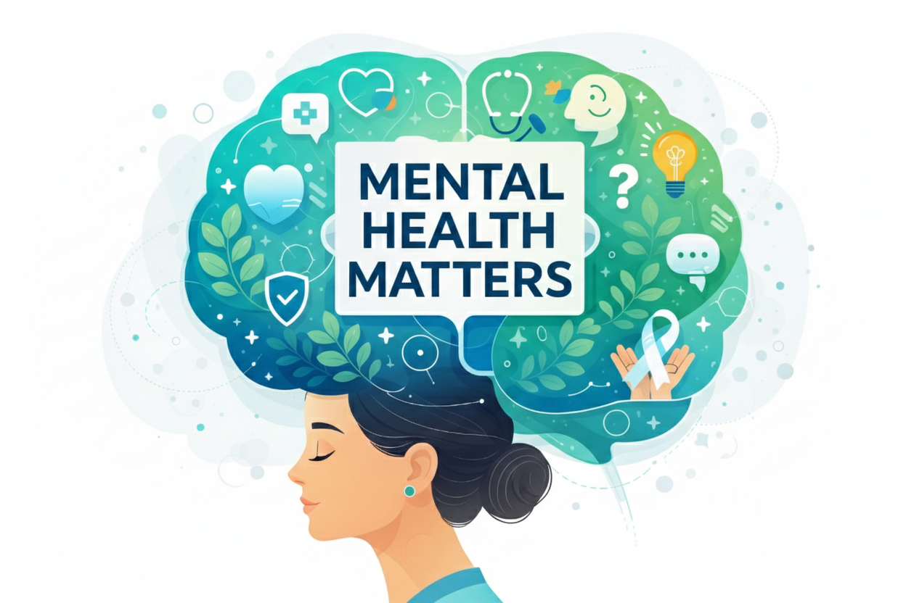
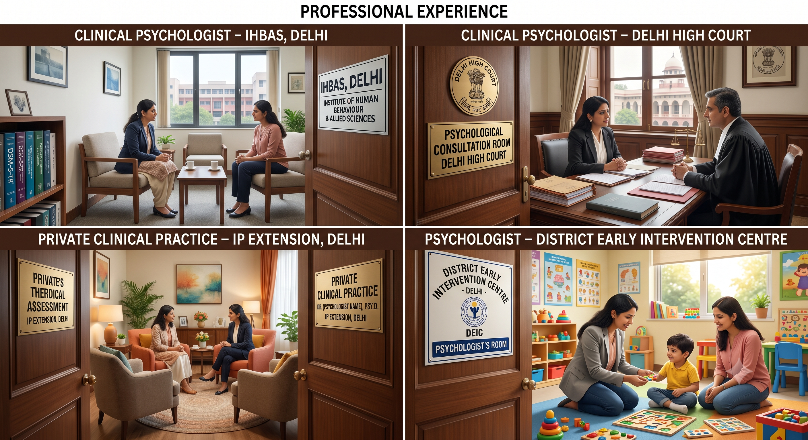

Welcome to Inner Radiance Psychology and Child Development Center, IP Extension, East Delhi

Dr. Bhavani Kaushal – Detailed Professional Introduction
Dr. Bhavani Kaushal is a dedicated and compassionate mental health professional known for her holistic, client-cantered approach to psychological wellness. With a strong academic background and extensive clinical experience, she has helped individuals across various age groups navigate emotional, behavioural, and psychological challenges. Her work integrates evidence-based therapies with deep empathy, ensuring each client receives personalized care tailored to their unique needs.

🎓 Education
Dr. Bhavani Kaushal completed her highest education in Clinical Psychology, from India’s one of the prestigious institutes- Institute of Mental health and Hospital Agra (also known as Agra Mental Hospital) with specialization in clinical practices, where she received hands-on training in therapeutic interventions, case formulation, and psychological diagnostics. Her academic training provided her with strong theoretical foundations in mental health, human behavior, psychotherapy techniques, and psychological assessment.
💼 Professional Experience
Dr. Kaushal has extensive experience working with: • Clinical Psychologist Institute of Human Behavior and Allied Sciences (IHBAS) Delhi • Clinical Psychologist- Delhi High court • Private clinical practice- IP Extension Delhi • Psychologist- District Early Intervention Centre (A Program by Rastriya Bal Swasthya Karyakram)

🌿 Professional Philosophy
Dr. Bhavani Kaushal believes that mental health is as important as physical health. She emphasizes: • Confidentiality and ethical practice • Empathy and non-judgmental listening • Evidence-based treatment methods • Empowering clients with coping skills • Creating a safe and supportive therapeutic environment Her goal is to help individuals build resilience, improve emotional intelligence, and lead balanced, fulfilling lives.
Her goal is to help individuals build resilience and lead balanced, fulfilling lives.
🏫 Registration
Dr. Bhavani Kaushal is registered with the Rehabilitation Council of India (RCI) as a clinical psychologist, which is a requirement to legally and ethically practise clinical psychology in India. Dr. Bhavani Kaushal is appropriately licensed and registered to practise clinical psychology in India.
Comprehensive Care
Schizophrenia
Depression
Sexual Problems
Anxiety Disorder
Child Development & Mental Health Services
Speech Therapy
Behaviour Therapy
Special Education
Parenting Guidance & Child Development
Watch Dr. Bhavani Kaushal share practical insights on parenting, child behaviour, emotional well-being, and healthy family relationships.
Appointment and Quick Assistance
Book an appointment with Dr. Bhavani Kaushal or reach out directly on WhatsApp for quick assistance.
Need Quick Assistance?
You may reach out on WhatsApp for general queries or appointment requests.
WhatsApp NowContact & Clinic Information
+91-7217756635 ✉️ Email
bhavanikaushal@gmail.com 📍 Clinic Address
C2, opposite PJ fitness Gym
near Geetanjali Salon, Madhu Vihar,
Sector 16, Indira Nagar,
I.P.Extension, Patparganj, Delhi, 110092
Disclaimer: Online information does not replace in-person consultation.